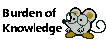
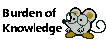

About Me
My name is Daniel Haller, I am a software engineer from Green Bay that loves working on complex and interesting projects. I am also a lifelong learner and love sharing my findings with other people. On this page you will find some of my prior projects I've either lead or have been involved with.
The easiest way to contact me is through my email: danielhallercs@gmail.com
Degrees
As of now, I am finishing up college with 2 bachelor’s degrees from the University of Wisconsin – Green Bay:
- Computer Science with an emphasis in Software Engineering
- Information Sciences with an emphasis in Game Studies.
I’m on track to complete my degrees and college in Spring of 2023 Offical Résumé
Programming
I’ve been fascinated with programming since I took a programming class in high school. From that point onward, I’ve continuously evolved and developed my skills to feature a variety of languages. Through my degree I’ve learned about the processes and uses of object-oriented programming and many of the design patterns that can be incorporated.
Java - 4+ Years
I started programming in Java when I began attending college at the University of Wisconsin – Green Bay. This language was my first object oriented programming languages and is a great basis for other languages I have learned or will learn in the future.
C++ - 2+ Years
I loved learning about this language after I had a grasp on computer architecture and design. I love programming in this language because of the parallels to computer hardware which is an interest of mine. My Featured Project is also mainly programmed in C++.
Python - 2+ Years
I’ve done quite a few projects using python for a variety of subjects include Data Mining and Artificial Intelligence. With python, I’ve used many popular libraries such as Numpy, Pandas, SciKit-learn, TensorFlow, matplotlib, and seaborn.
Other Languages - ~1 Year
C#, SQL, HTML and JavaScript
If you're looking for specific applications of my skills, check out Other Projects
I don't have much web experience so if you're curious about this website that's on the footer of this page
 

Featured Project:
Asteroids
This project was part of a venture into the processes and structures of Software Engineering and the capstone of the Software Engineering major. I worked with a team of 2 other students to research and develop a functional game that created graphics directly through OpenGL to be simple and portable.
Our project’s goal was to develop the fundamental aspects of a game engine that could be modified and repurposed in other projects and experiments, and to create our game without as few external tools and platform dependent elements as possible.
This project was created in the span of 3 months with much of the earlier work involving planning and researching what our goals of the project would be. This project was planned and executed according to a plan with changes to the plan developing as needed. We developed documents such as:
- Project Proposal
- Task Report
- Test Plan
- Progress Reports
The project consists of a complete game including a start screen, gameplay, pause screen, and game over screen. Inside the game the player can move their ship around and shoot asteroids that spawn in waves around the player. When the player shoots those asteroids, they break into smaller asteroids that must be shot again. The asteroids have 3 sizes with the smallest size destroying the asteroid entirely without spawning a new asteroid, as the waves progress, more asteroids spawn.
Some of my specific tasks included:
- Creating the gun that fires from the spaceship
- Creating meteors and managing them during gameplay
- Creating the text, textures, and menus in the game
- Linking project resources and dependencies
Although team members were given specific tasks, we often helped each other through lending our knowledge or discoveries on certain tasks. We also provided resources and ideas for the other team members when they needed help.
Other Projects
I have worked on projects in a variety of disciplines and love tackling new challenges